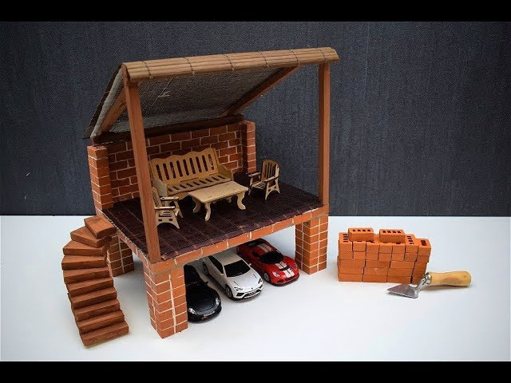

«Описание безнеспроцесса»:
1) Шаг Мне принесли формочки из силикона. 2 формочки каждая на 50 кирпичиков. Первые вложения - покупка на вайлдберис: - 1000 Руб


2) Шаг С работы я приношу различные строительные смеси, которые есть и начинаю заполнять ими формочки, производя тестирование и подбор оптимальных материалов для производства кирпичей. Отрабатывается и создаётся технология создания кирпичика, документируется и создаётся методичка и инструкция изготовления кирпича. Можно протестить имеющиеся инструкции. Моя цель создать 1000 кирпичиков и посчитать сколько времени у меня уйдёт на это, имяя я 2 формочки. В процессе работы над технологией на сайт можно добавлять контент!
опыт по изготовлению3) Шаг Пока изгатавливаются кирпичи и сохнут, я работаю над инструкцией макета для чего в первую очередь ищу что имеется в интернете. Продумывание модельного ряда. Разработка инструкии под каждую модель, возможно использование блендера. Есть идеи как сделать одинаковые стили у картинок, использую блендер. Для примера я хотел бы взять макет русской печки.
4) Шаг Поиск технологий, решений, инструментов, которые помогут сделать процесс быстрым, удобным, качественным.
- Изготовление кирпичиков. Пробую разные смеси, разные пропорции, делаю тестовые заполнения. ОТфотографировать, добавить опыт на страницу затем. Создание контента.
- После того как наберётся необходимое количество кирпичиков, тесты по сборке небольших изделий. Отработка техники нанесения раствора. Подбор оптимального раствора. Возможно использование пва в качестве раствора и специнструмента типа шпатели, коврик для творчества. Идёт отработка технологии сборки, фотографирование, создание контента для сайта. В итоге появятся первые изделия и фото этих изделий.

- Наткнулся на конкурентов, когда искал картинки, а точнее на некоторый пример реализации идеи: Набор печи из микрокрипичиков
5) Шаг Формирование наборов
- Готовые упакованные кирпичики (стречем)
- Инструкция распечатанная
- Смесь для кирпича
- Силиконовая форма
- Набор минишпателей
- Связующий раствор
- Салфетки, тряпки, и что может пригодиться о чём станет ясно в тестировании продукта. При сборе первого макета
- Считаем себистоимость
- Узнаём производственные затраты
6) Шаг Продажа имеющихся наборов, выход на рынок с готовым продуктом, когда на складе 15 наборов лежит. Конечно ключевым будет вопрос Куда продавать? на который предлагаю возможные варианты:
- вайлдберис, озон, яндексмаркет
- авито, сайты объявлений
- соцсети
- сделать хороший сайт и продвигать его в интернете. Интернет магазин
7) Шаг Полез изучать рынок.
- Запрос "мини кирпичи" 2500 запросов в месяц примерно 5 месяцев уже
- Посещаемость: Март 2024: 1500 просмотров